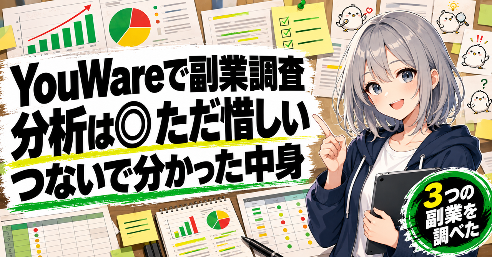
AIのコネクタは数より中身。YouWareで競合調査から企画まで試した
※YouWareから依頼を受けて書いています（PR）。内容は使ったままの記録です。
会社員をしながら、副業を3つやっています。犬や猫が出てくる感動系のYouTube（最近やっと収益化が通りました）、LINEスタンプと絵文字、それとこのnoteです。
3つとも、悩みは同じです。次に何を作るか。
今回は「YouWare」というAIサービスで、3つそれぞれの「次」を調べてもらいました。調べものから資料作りまでを、AIのチームに分担させられるサービスです。
📋 この記事でわかること
- ✅ YouWareで副業3つ（YouTube・LINE・note）を調べた結果
- ✅ コネクタでつないでも読めない数字があった理由
- ✅ AIのチームが自分で間違いを差し戻す場面
- ✅ 調査から制作指示書・スライドを作らせ、3か所だけ直させた前後
- ✅ 良かったこと・困ったこと、かかった時間とクレジット
- ✅ 結局、自分ならどう使うか
📌 先に結論
👍 良かったこと
- ✅ AIのチームが役割を分けて、途中経過を見せながら進む
- ✅ 読めない数字は「読めない」と書き、作り話で埋めない
- ✅ 言えること（公開ページで見えた事実）と、言えないこと（売上や効果）を分けて書く
- ✅ チームの中で間違いを見つけて、差し戻していた
- ✅ 調査がそのまま、レポート・比較表・スライド・制作指示書になる
- ✅ 直す場所を指定すると、初稿を残したまま、そこだけ直した版を作る
- ✅ 9月29日の再検証では、HTMLの保存と、画像生成・PNGの保存までできた
😣 困ったこと
- ⚠️ YouTubeをつないでも、Studioの数字（クリック率・視聴維持率・収益）は読めなかった
- ⚠️ 競合の字幕が取れず、動画の中身までは見ていない
- ⚠️ 1本の調査に20分以上かかる
- ⚠️ 初稿には、根拠のない言い切りや架空の数字が混ざる（リーダー役が直したが、ゼロではない）
- ⚠️ 図の指示に細かいずれがあり、作る前の読み直しは要る
調べた内容と、使った機能を順番に書きます。
🧰 YouWareにある機能
実際に使ったのは次の機能です。
- 👥 エキスパート：役割がセットになったAIのチーム。今回は「競合分析チーム」を使いました。競合を調べる係、読者を調べる係、企画を立てる係などがいて、リーダー役が仕事を配ります
- 🔌 コネクタ：YouTube・Googleドライブ・Gmail・Excel・Slack・Notionなどとつなぐ機能。📢 公称では3,000以上あります
- 👀 進捗：どの係が何をしているか、どの道具を使ったかが見える欄
- 📄 成果物：HTMLのレポート、Excel、スライド、図。YouWareの中で開いて確認できます
- 🤖 モデル選択：今回は「Auto」のままにしました
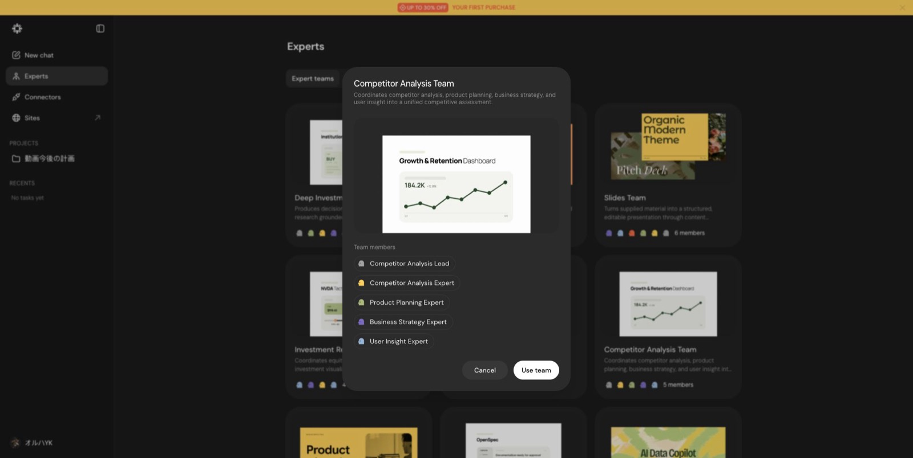
📺 調査1 YouTube：つながっても、読めない数字があった
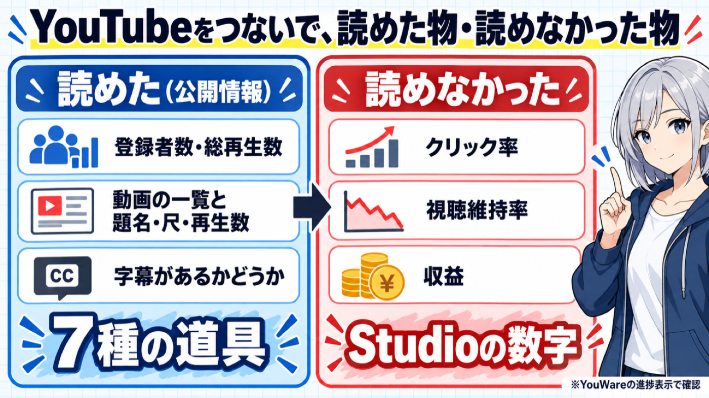
最初はYouTubeです。接続済みのYouTubeをつないで、「自分のチャンネルの数字を読んで、競合と比べて、次の4週間で試す企画を3つ出して。読めなかった数字は読めなかったと書いて」と頼みました。
まず接続先のチャンネル名とIDを確かめて、自分のものと一致すると報告してきました。そのあと、こう書いてきました。
期間別のStudio指標を取得するAnalyticsレポート機能は、現在のYouTubeツール一覧では見当たりません。
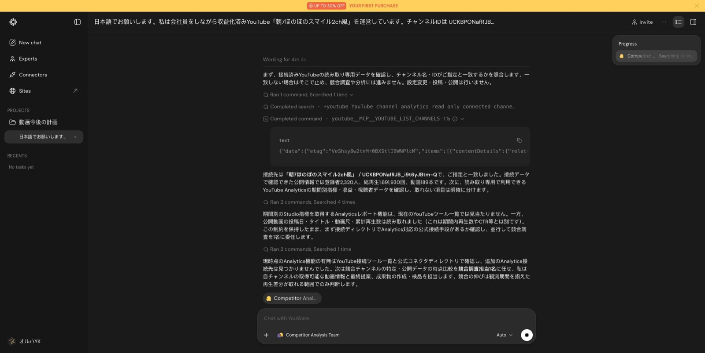
なぜ読めないのか。進捗欄を見ると理由が分かりました。コネクタの中には、「チャンネル一覧を取る」「動画の詳細を取る」といった小さな道具が入っていて、AIはそこから選んで使います。仕組みはMCP（AIが外のサービスを使うための共通の差込口）です。
📊 今回YouTubeで使われた道具は7種類でした。
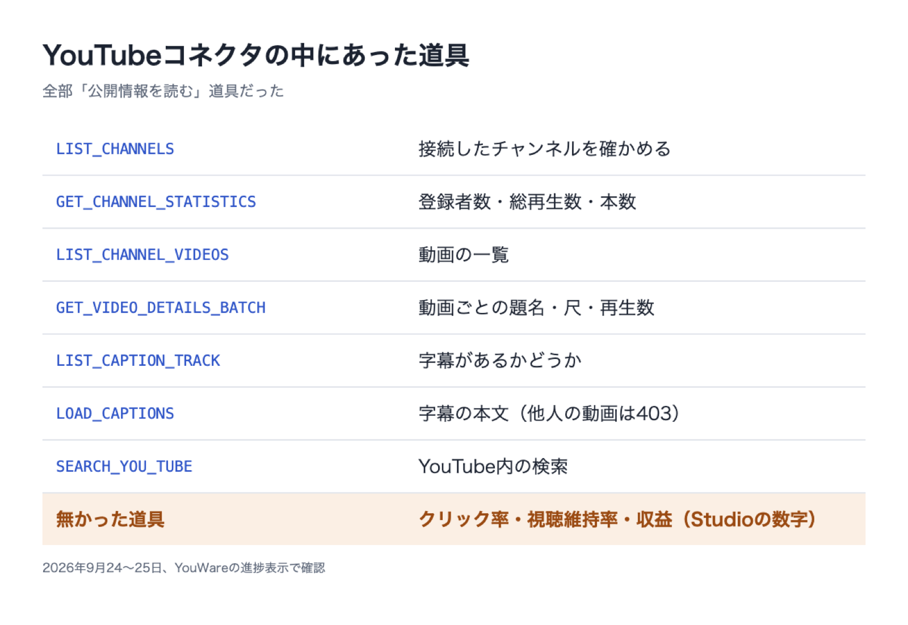
全部、公開されている情報を読む道具でした。一番知りたかったクリック率・視聴維持率・収益の道具は、今回見えた範囲にはありません。なので、その数字は自分でStudioから取って渡しました。YouWareには「コネクタで取った値」と「渡した値」を分けて扱ってもらっています。
それでも、1回目の調査でHTMLのレポート、Excelの比較表、5枚のスライド、図2枚ができました。
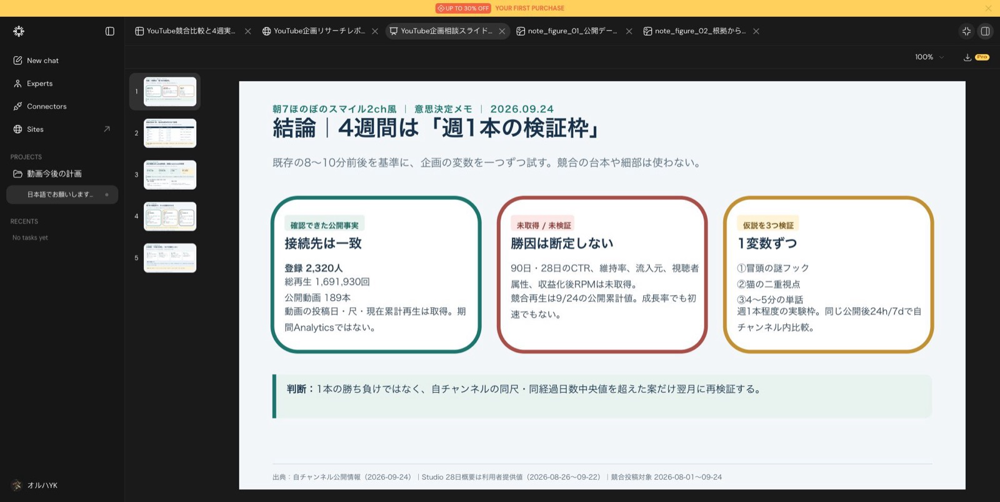
2回目は、自分が普段見ている競合5チャンネルを指定して「どんな話の型が反応されているか」を調べてもらいました。各チャンネルの最新10本、計50本の公開情報から、比べる対象を23本、話の筋を確認する候補を15本に絞っています（画像の競合名はぼかしています）。
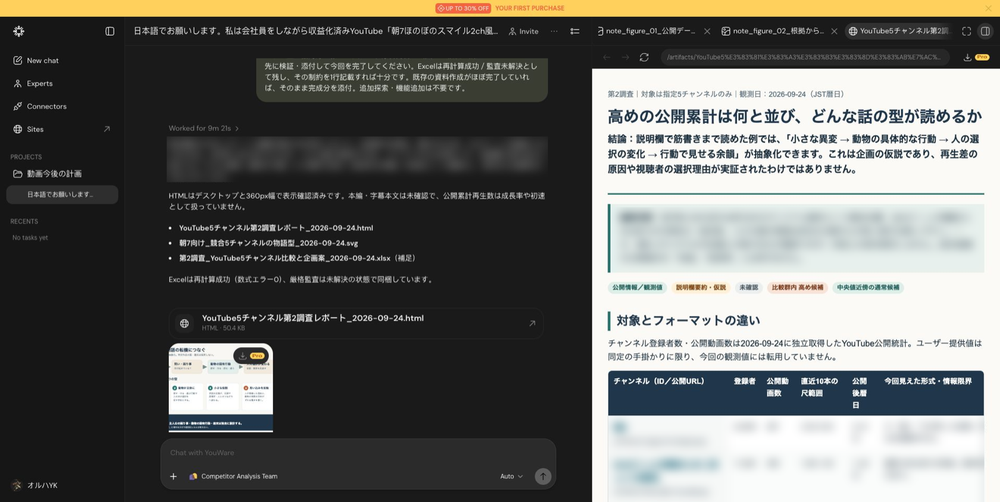
出てきた型は「小さな異変 → 動物が動く → 人の選択が変わる → 具体的な行動で終わる」。自分で調べて台本に入れていた型と同じでした。ただ、字幕の本文は「所有者制限で403」で取れず、動画の中身は見ていません。説明欄と題名から読んだ型です。
💬 調査2 LINE：絵文字を主軸にする案が出た
次はLINEスタンプと絵文字です。コネクタはつながず、Web調査だけで頼みました。
先にコネクタ一覧で「LINE」を検索してみました。LINEのコネクタはありましたが、説明は「公式アカウントのMessaging API」用。スタンプの売上を読む物とは書かれていません。
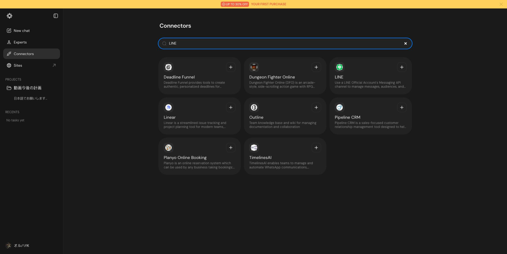
📌 レポートの結論は「次の3か月は絵文字を主軸に。ドット絵の『社会人の日常リアクション』を試す」。制作時間は絵文字7割・スタンプ3割という配分案でした。
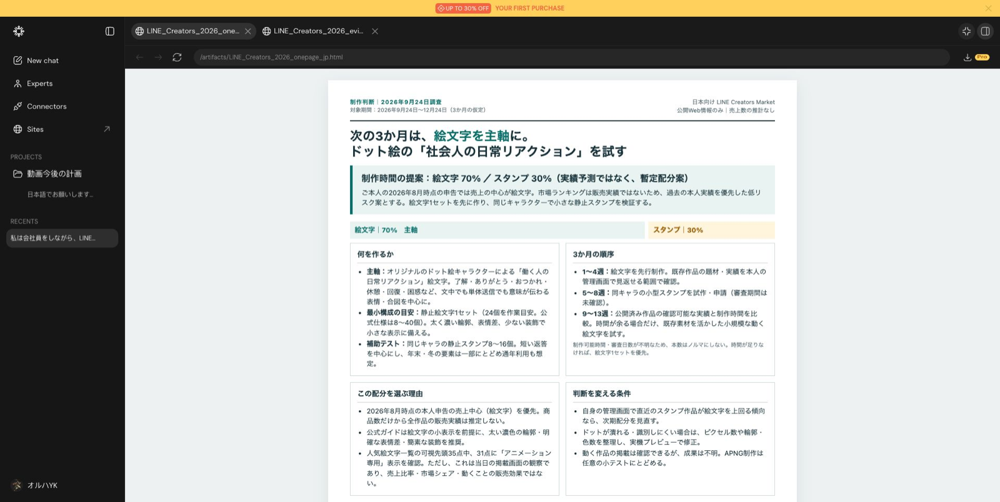
この7割・3割は、自分が伝えた「売上の中心は絵文字」から置いた仮の配分で、売上の予測ではないと明記されていました。LINEの人気一覧で掲載されていた10作品を比べ、一次ページのリンクを23件付けています（作品名はぼかしています）。
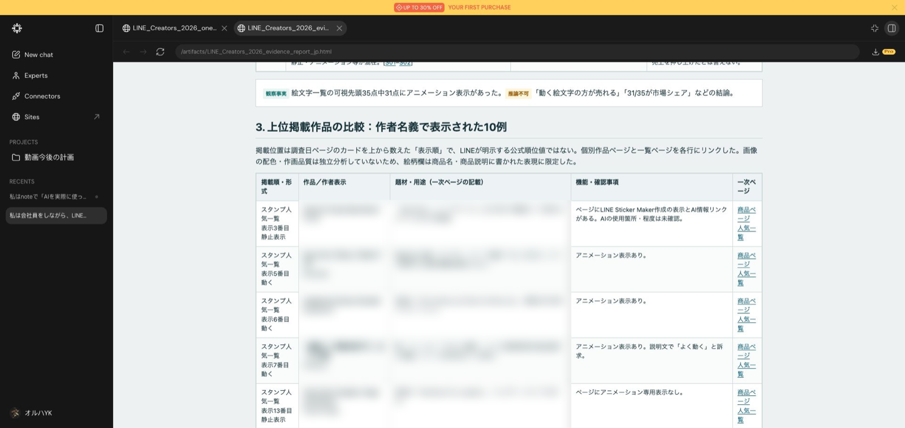
良かったのは、ランキングを売上と混ぜていないところです。「掲載順は売上の順位ではない」「動く作品が多く見えたが、動く方が売れるとは言えない」と、言えることと言えないことを分けていました。
📝 調査3 note：記事の構成を3つの型にまとめた
最後はnoteです。「読まれて、有料やメンバーシップにつながる記事の構成」を調べてもらいました。
コネクタで「note」を検索すると、出てきたのはListen Notesという別のサービスだけでした。note専用のコネクタは、今回は見つかっていません。
📌 結論は「結果は無料で見せて信頼を得る。再現キットは単発の有料に。続けて観測する内容はメンバーシップに」。
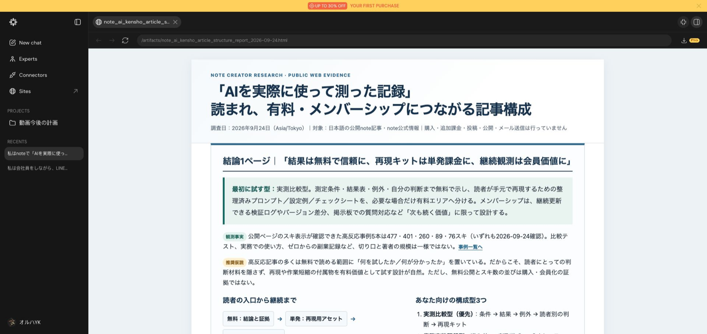
構成の型として出てきたのは3つです。
- 🧪 実測比較型：条件 → 結果 → 例外 → 読者別の判断 → 再現キット
- 🏗️ 業務実装記録型：導入前 → 手順 → 成功とエラー → 効果と制約 → 設定例
- 🔭 定点観測型：今回の差分 → 記録 → 仮説の修正 → 次に見ること
スキが見える同じジャンルの記事5本を並べて、見出しの流れや画像の使い方を比べていました（著者名などはぼかしています）。ただ、スキは売上や加入の数ではありません。レポートにもそう書かれていて、「まず次の1本で試して、自分の数字と比べる」という提案で終わっていました。
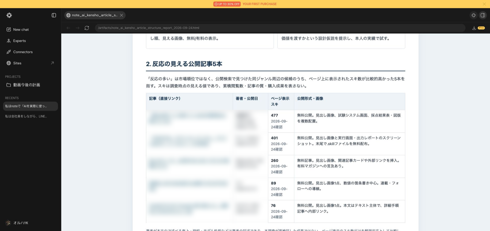
この記事も、実は「実測比較型」に近い形で書いています。
👥 チームの中で間違いを差し戻していた
LINEとnoteで一番印象に残ったのは、リーダー役の見直しです。
LINEでは、担当の係が作品の画像を見ていないのに絵柄を言い切っていました。リーダー役がそれを見つけて、「観察した事実と提案を分けて」と差し戻しています。
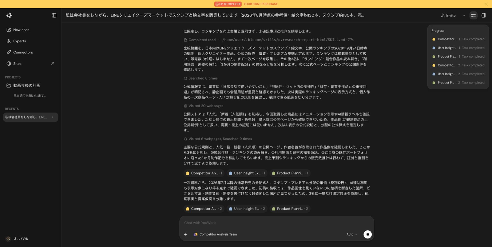
noteでも、URLのない仮置きの行や、根拠のない言い切り、架空の数字が入っていました。これもリーダー役が採用せずに直させています。
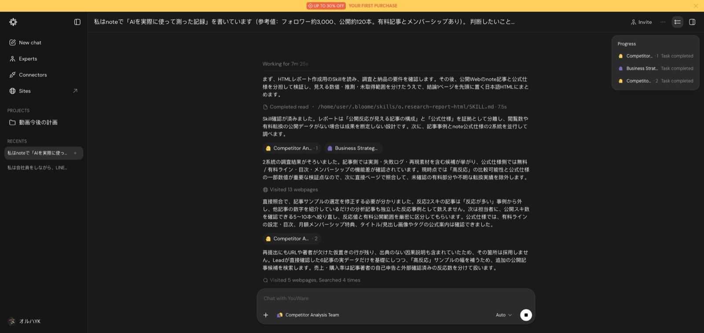
チームにしても、間違いは入ります。ただ、見直す工程が画面で見えるので、どこを信じていいかの目安になりました。
🛠️ 作らせて、3か所だけ直させた
調べて終わりでは、仕事になりません。そこでnoteの調査と同じ画面で、調査結果を「使える資料」に変えてもらいました。頼んだのは3つです。
- LINEの提案から、「仕事終わりの短い返事」絵文字8個の制作指示書と、8個の配置ラフ
- noteの構成の型を、編集会議用のスライド4枚に
- 記事の「入力 → AIの作業 → 人の確認 → 実用品」の工程図
1通目で、表・ラフ・スライド4枚・工程図がまとまって出てきました。📊 表示された作業時間は21分1秒です。
次に、2通目で3か所だけ直すように頼みました。初稿は残して、別の版として作らせています。
1つ目は絵文字です。「8個の中で一番似ている2個を選び、小さくしても見分けがつくように片方を変えて」と頼みました。④「確認」と⑤「着手」が似ていると判断され、④だけ、ボードを高く掲げて指を1本立てるポーズに変わりました。
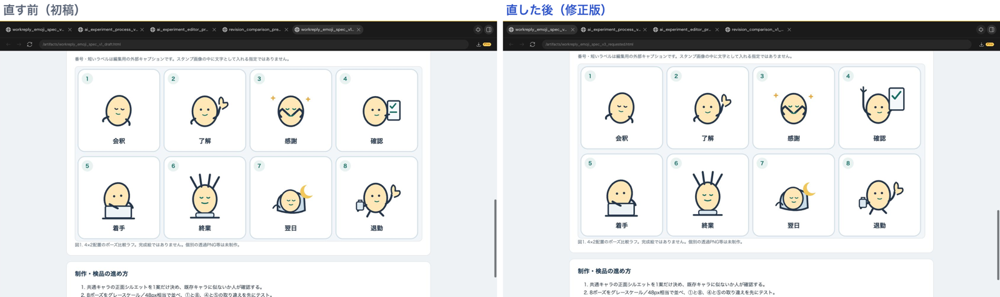
2つ目はスライド3枚目です。「無料と有料の境目を、見出しの並びの中に1本の線で示して」と頼むと、見出しの下に線が引かれ、線の上（無料）と下（有料）に置く物が1行ずつ入りました。
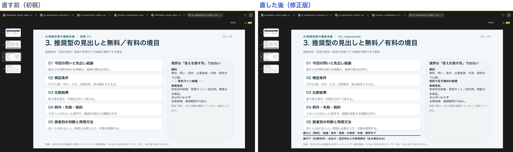
3つ目は工程図です。「人の確認」の箱に、「出典のURLがあるか」「事実と推測が分かれているか」の2つが書き足されました。
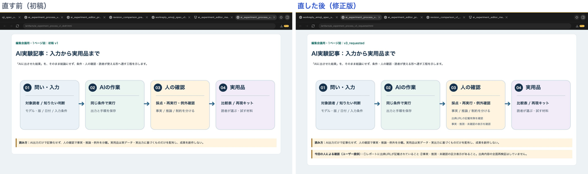
📊 修正にかかった時間は11分でした。直す場所を具体的に指定すると、そこだけ変えて、変えなかった場所も一覧にして返してきます。調査から制作のたたき台までを、ひと続きで作れるのは便利でした。
⚠️ ただ、9月25日にできたのは完成品ではありません。絵文字はSVGのラフで、この時点では画像を生成していません。Wordの指示書はファイル名は出ましたが、ダウンロードしていないので中身は見ていません。
9月29日追記：ダウンロードと画像生成を試し直した
記事を共有したあと、YouWareの担当者から「トライアル会員でもダウンロードできる」「画像・動画生成モデルの呼び出しに対応した」と連絡をもらいました。そこで、以前使ったLINEの調査画面を開き直し、ダウンロードと画像生成を試しました。今回はログインを自分で行い、その後のブラウザ操作と保存ファイルの確認はCodexに任せています。
今回は、HTMLもPNGも手元に保存できました。
まず、既存のLINE調査レポートをダウンロード。保存したHTMLをローカルのブラウザで開くと、結論・比較表・制作配分の案まで表示されました。YouWareの中だけで読む資料ではなく、ファイルとして取り出せるところまで確認できています。ただし、保存後の編集までは試していません。
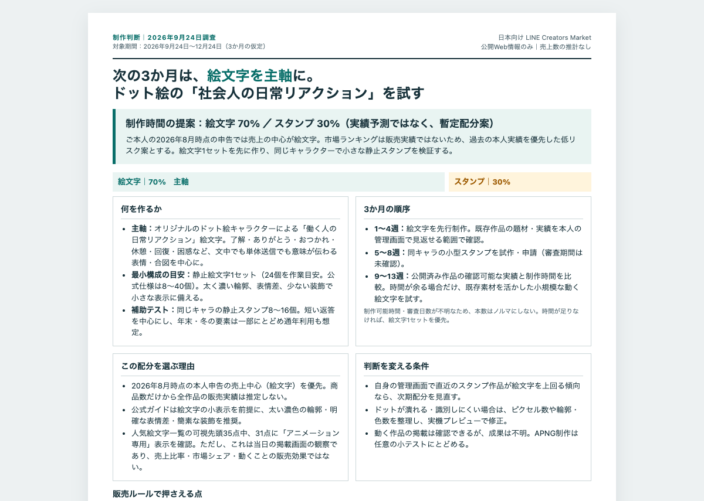
次は画像です。調査で出た「社会人の日常リアクション」をもとに、丸い豆型の仮キャラが仕事終わりに手を振る絵を1枚頼みました。文字なし、白背景、太い輪郭。既存のキャラをまねず、HTMLやSVGの代わりではなく、画像生成モデルで作る指定です。
YouWareは先にモデル名・最終プロンプト・見積もりを出し、承認を求めてきました。画面上のモデル名は gpt-image-2.5-flare、見積もりは約21.7 YouWareクレジット。これを承認すると、1回の生成でPNGが返ってきました。モデル名はYouWare上の表示を記録したもので、提供元や内部のモデル構成まで確認したわけではありません。
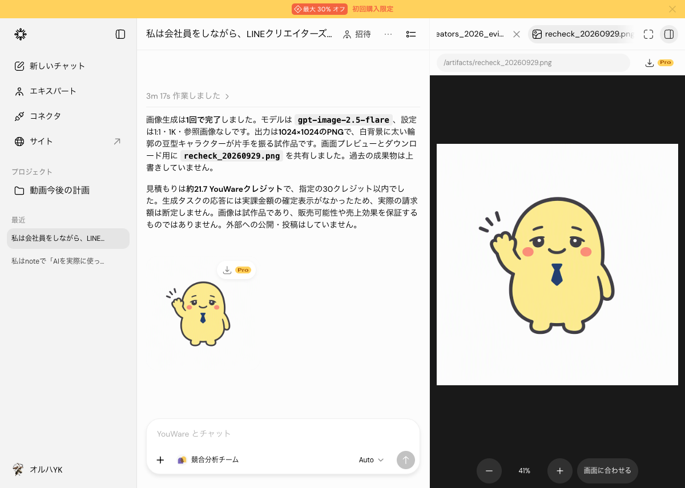
保存した実物もPNGで、サイズは1024×1024。黄色い豆型の体、紺のネクタイ、片手を振るポーズになっています。表情や配色を相談する最初の1枚としては使えそうです。ただ、これは白背景で、透過画像ではありません。LINE用にサイズを整え、同じキャラで必要数をそろえ、申請できるかを確かめるところまでは進めていません。
作業時間の表示は、見積もりとプロンプトの準備が2分54秒、承認後の作業が3分17秒でした。後者にもファイルの用意などが含まれるため、画像モデルだけの生成時間とは区別しています。
クレジットは、今回のやり取り前後で2,282から2,241へ、合計41減っていました。見積もり21.7と、残高の差41は別の数字です。準備や会話などを含む内訳は分からず、画像1枚の実消費を21.7とも41とも断定できません。「30以内」と指定したのは画像生成1回ですが、やり取り全体は30を超えました。追加購入はしていません。
もう1点、トライアルについて。担当者の説明は「トライアル会員でもダウンロード可能」です。一方、今回のアカウント表示は「Pro」で、画面だけではトライアル中かどうかを確定できませんでした。確認できたのは、このアカウントでHTMLとPNGをダウンロードできたことです。
これで、以前の「画像生成は使えなかった」「指示書とラフまで」という評価は更新できます。調査で出た案を、その場で画像の試作につなげるところまでできました。動画生成、Wordやスライドのダウンロード、LINEの商品一式の完成は今回の検証には含めていません。
⚠️ 困ったところ
🔌 Studioの数字は読めない。上に書いた通りです。YouTubeを「つないだ」ことと「欲しい数字が取れた」ことは別でした。
⏱️ 時間がかかる。表示された作業時間は、LINEが24分32秒、noteが22分51秒。すぐ答えがほしい相談には向きません。
💳 初回はダウンロードで購入画面に移った。9月24〜25日の検証では、購入画面に移って保存を試せませんでした。9月29日は同じ結果ではなく、HTMLとPNGの保存に成功しています。トライアル条件は上の追記に分けて書きました。
🖼️ 初回の画像生成には失敗した。note用の図を2枚頼んだ時は、2回ともエラーでした。9月25日の追加制作も生成せずSVGになりましたが、9月29日はPNGを1枚生成できました。以前の失敗だけで「使えない」とは言えなくなりました。
🔍 細かいずれ。以前頼んだ動画の台本で、平均と中央値の例に「全部2」の値を「等間隔に並べる」という図の指示がありました。全部2なら同じ位置に重なります。作る前に読み直しは要ります。
🎯 結局、使うならこんな感じ
全部試してみて、自分の副業で使うならこの流れになります。
- 🎯 問いを1つに絞る。「次の3か月、絵文字とスタンプのどちらに時間を使うか」くらいまで狭くする
- 🔎 YouWareに調べてもらう。公開情報を集めて、出典つきの比較表と、言えること・言えないことを分けた結論1枚を作ってもらう
- 📊 自分の数字は自分で渡す。Studioの数字や売上は、つないでも読めない物がある。管理画面から取って渡し、AIが取った値と分けてもらう
- 📄 方針が決まったら、そのまま制作指示書やスライドにする。直したい所は場所を指定して、初稿を残したまま直させる
- 🎨 絵はまず1枚試作する。YouWare内で画像生成とPNGの保存まで試せた。LINE用に使うなら、透過・サイズ・キャラの統一を別途確認する
- 📈 出してから数字を見る。提案が当たったかどうかは、公開・販売したあとの自分の数字でしか分からない
YouWareに任せるのは「決める前の材料集め」と「作る前の指示書づくり」。そこから画像を1枚試作する使い方もできました。自分の管理画面の数字、動画の中身、絵の良し悪しは、自分で見て判断する。この線を引いておくと、待ち時間の20分も「その間に別の作業をする時間」になります。
最初の1回は、進捗欄を開いて、どの道具が使われたかを見てください。つないだサービスの何が読めて、何が読めないかが分かります。
💡 コネクタは数より、中にどの道具が入っているかで決まります。
📋 試した条件
- サービス：YouWare
- 期間：2026年9月24〜25日。ダウンロードと画像生成は9月29日に再検証
- プラン：初回はPro（お試し）として利用。9月29日の表示はProで、トライアル状態は未確認。追加の購入・新しいコネクタの接続はなし
- クレジット：YouTube 1回目 3,150 → 2,807（差343）／LINE 2,807 → 2,549（差258）／note 2,549 → 2,292（差257）／追加制作と修正 2,292 → 2,232（差60）。9月29日の再検証は2,282 → 2,241（差41）。日をまたいだ残高の変化と、処理ごとの内訳は不明
- 作業時間はYouWareの表示。こちらの確認時間は含まない
- 他のAIと同じ条件での比較はしていない。9月29日の画像生成は1回。以前の画像生成失敗とは依頼内容も日付も異なる
- 提案された企画は、まだ公開も販売もしていない。再生や売上への効果は分からない
あなたなら、YouWareに最初に何を調べさせますか？
スキを押してもらえると次を書く励みになります🌟